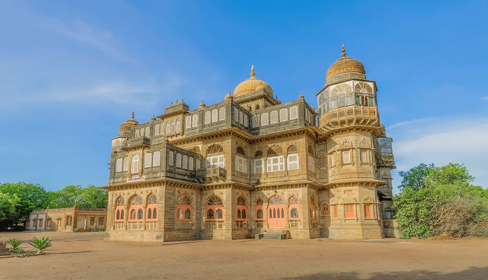
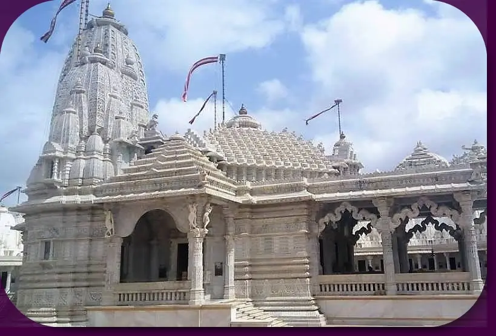
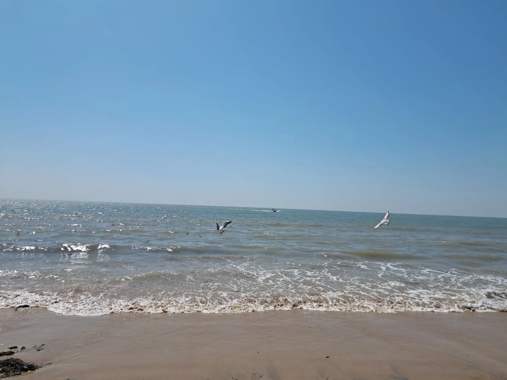
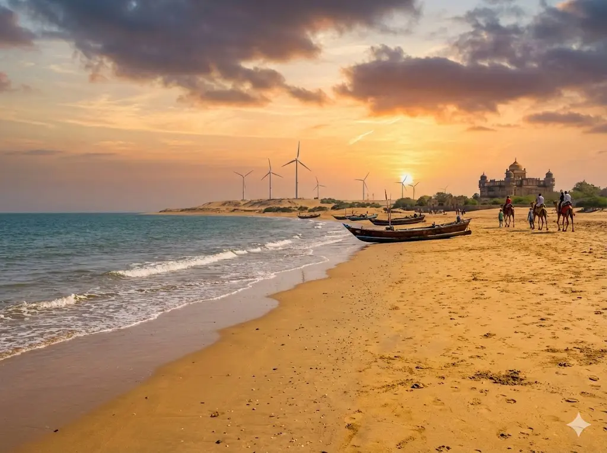
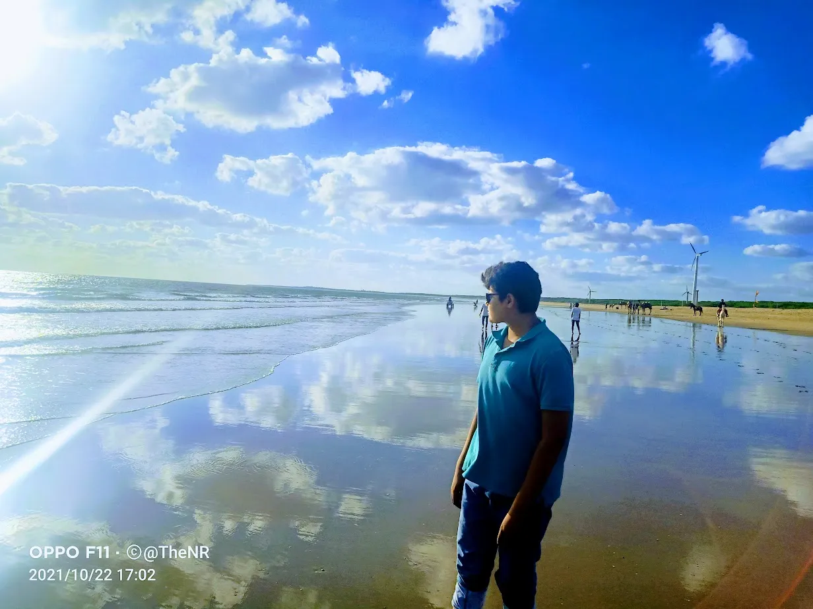
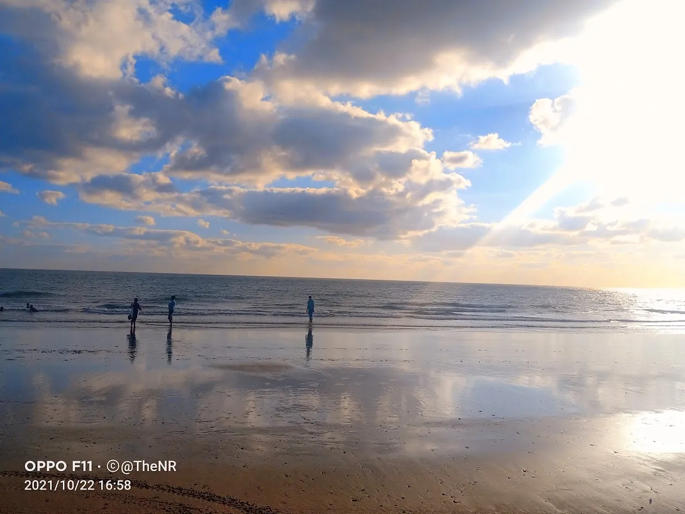
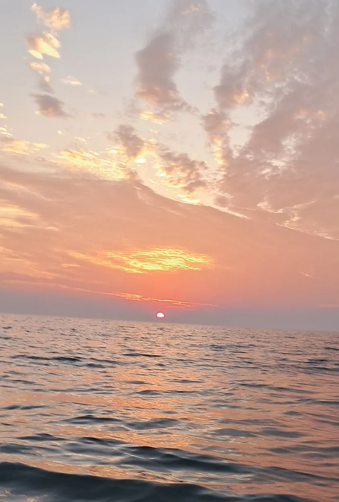

Mandvi is the only premier beach destination in Kutch, offering a perfect relaxed break from the arid desert landscape. Once a major port for the spice trade, it is now a popular day-trip and weekend getaway from Bhuj (1 hour away). Known for its pristine beaches, the royal Vijay Vilas Palace, and a 400-year-old shipbuilding tradition, Mandvi is where history meets the Arabian Sea. A typical visit lasts 1 to 2 days, making it ideal for unwinding after exploring the White Rann.
Who Should Visit
- Families: Safe beaches with camel rides and water sports keep kids entertained.
- Couples: Romantic sunsets at the Wind Farm Beach and royal palace vibes.
- History Buffs: The living heritage of the Dhow shipbuilding yard is fascinating.
- Relaxed Travelers: Anyone looking to escape the desert heat and chill by the ocean.
How to Reach
- By Air: Nearest airport is Bhuj (60km). Taxis available from airport to Mandvi (1 hour).
- By Train: Bhuj Railway Station (BHUJ) is the nearest major station, well connected to Mumbai and Ahmedabad.
- By Bus: Frequent GSRTC and private buses run from Bhuj (1 hour) and Gandhidham (1.5 hours).
- By Road: Excellent road connectivity from Bhuj. A scenic 1-hour drive through the countryside.
Landmarks & Heritage
The defining monuments

Vijay Vilas Palace
(1-2 Hours) Visit in the afternoon (3 PM - 5 PM) to see the royal grandeur. Famous for 'Hum Dil De Chuke Sanam' shoot. Entry: ₹50. Phone cameras allowed.

Mandvi Wind Farm Beach
(Evening) The best sunset point. Enjoy camel rides, horse rides, and street food. It gets crowded on weekends, so go a bit further down for peace.

Shipbuilding Yard
(30-45 Mins) Visit in the morning. Watch craftsmen build massive wooden ships by hand on the banks of Rukmavati River. Free to watch from the bridge.

72 Jinalaya
(45 Mins) A stunning Jain temple complex 10km from town. Best visited on the way to/from Mundra. Peaceful and photogenic architecture.
Shyamji Krishna Varma Memorial
(1 Hour) Interactive museum dedicated to the freedom fighter. Great for history lovers. Closed on Thursdays.
Curated Local Advice
Timing
Don't visit the beach at noon (12-3 PM); it's too hot. Mornings and evenings are perfect.
Shopping & Bazaars
- Main Market (Bazaar Road): The heart of Mandvi's shopping. Find authentic Bandhani textiles, local handicrafts, and traditional Kutchi embroidery at lower prices than Bhuj.
- Ship Building Area Market: Small shops selling nautical items, ship models, and maritime souvenirs. Unique to Mandvi's shipbuilding heritage.
- Beach Road Stalls: Evening market near Wind Farm Beach selling local snacks, Dabeli, beachwear, and colorful kites.
- Textile Shops: Several family-run shops specializing in Bandhani and block-printed fabrics. Ask for factory-direct prices.
- Handicraft Emporiums: Government-certified stores near the palace offering authentic Kutchi crafts with fixed prices.
Local Eats
- Dabeli: Mandvi is the BIRTHPLACE of Dabeli. Try the authentic version which is less sweet and more spicy than elsewhere.
- Kutchi Thali: Unlimited vegetarian meal. Try 'Rotla' (millet bread) with 'Olo' (roasted eggplant) at Osho Dining Hall.
- Ice Gola: Enjoy dry-fruit and malai Gola (ice shaved dessert) at the beach in the evening. A perfect summer treat.
When to Visit
October to March (Winter): Best time. Days are pleasant (20-30°C) and evenings are
cool. Perfect for beach activities.
April to June (Summer): Hot and humid.
Day temps hit 35-40°C. Good for evening beach walks but avoid day sightseeing.
July
to September (Monsoon): Mandvi looks beautiful with green surroundings and dramatic
clouds, but swimming is restricted due to rough seas.
Nearby Places to Visit
Suggested Itinerary
Location & Gallery







